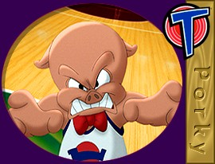

© 1996 Warner Bros.
© 1996 Warner Bros.

PorkyThe first of the familiar Warners Cartoon stars was Mr. Porcine "Porky" Pig. Porky emerged a star from Friz Freleng's I Haven't Got a Hat as early as 1935. According to Director Freleng, "When I was a kid, I had two playmates--a little fat kid called Piggy and his younger brother, who was called Porky. I always wanted to do a comic strip with two kids with those names. But in animation, everything is animals, so when I had this classroom cartoon, I thought of Porky."
Friz Freleng saud, "We were searching for a new character,and the audience told us Porky was the guy."
© 1996 Warner Bros.